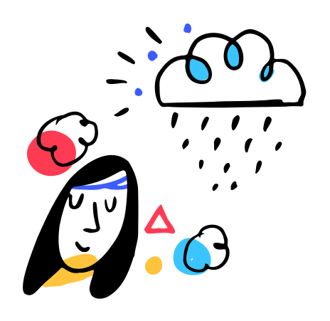

Quarantine got you down? Tired of studying on your own? Let us find you a study buddy! Our service is perfect for those extroverts that just love having someone by their side while they’re hitting the books.
Select your major, fill out a bio, and choose the amount of time you’d like to study. We’ll automatically search through our users and display study buddy matches for you. Select a buddy and get to studying!
Turn on your webcam and say hi to your new study buddy! Feel free to chat while you’re studying and maybe you’ll even walk away from your study session with a new friend. Our service is perfect adding accountability into your studying session.